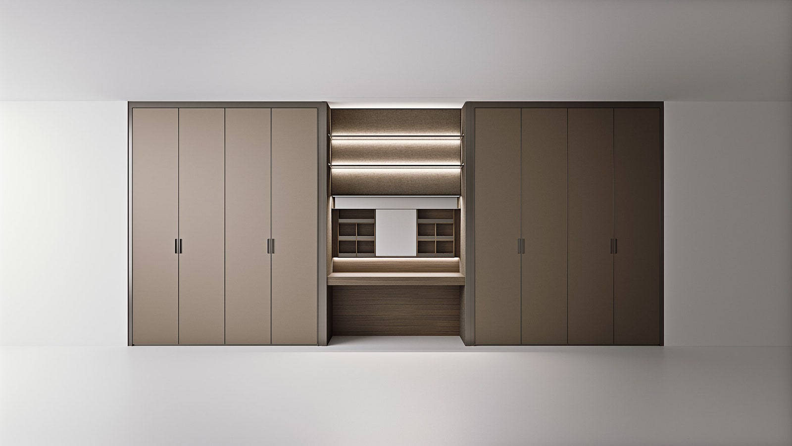
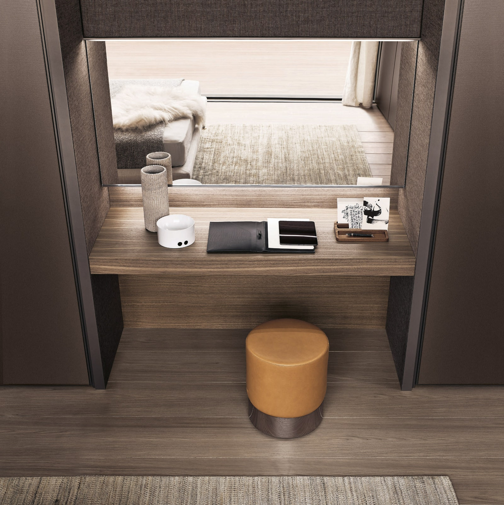
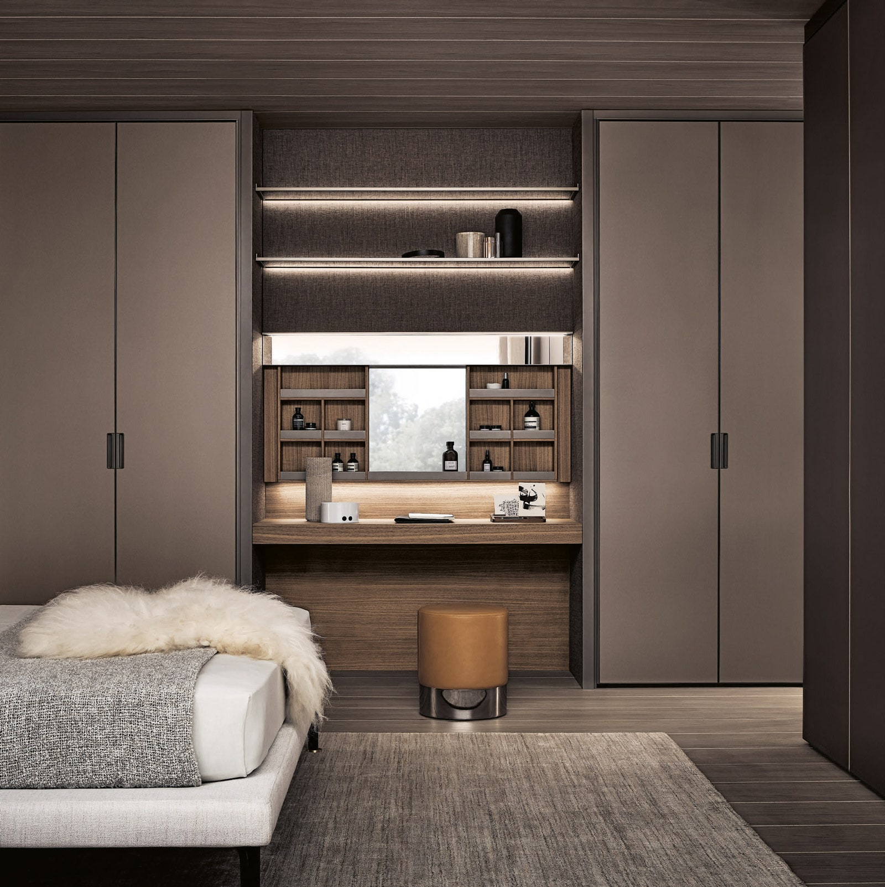

Где разместить туалетный столик: функциональное решение для ценителей минимализма
Рассказываем о туалетном столике, разработанном специально для интеграции в гардеробную систему.
Бренд Rimadesio известен многим как производитель дверей, перегородок и функциональных систем хранения, однако итальянская компания не ограничивается только этим: сотрудничающие с ней дизайнеры создают и дополнительные элементы интерьера. Так, одной из новинок стал туалетный столик Vanity, разработанный “дизайнером-инженером” Джузеппе Бавузо.
Модель Vanity поможет более рационально использовать пространство спальни: он встраивается в системы хранения и гардеробные, что позволяет сэкономить место и сохранить чистоту линий в интерьере. Столик можно комбинировать с системами Modulor, Abacus, Cover, Cover Freestanding and Dress Bold от Rimadesio, встраивая как в линейные, так и в угловые композиции.
“Говорящее” название Vanity (с английского переводится как “тщеславие” наверняка выбрано неслучайно. Туалетный столик — это предмет мебели, который помогает нам приводить себя в порядок, выглядеть так, как мы хотим, и чувствовать себя более уверенно. Впрочем, в случае с моделью от Rimadesio название обладает и дополнительным смыслом: столик Vanity точно станет предметом вашей особой гордости.
При создании туалетного столика используются качественные благородные материалы:
- натуральное дерево
- алюминий
- стекло
Предмет всегда выполняется на заказ по индивидуальным требованиям клиента: у вас есть возможность подобрать оптимальную высоту и длину столешницы, а также количество скрытых блоков хранения. Кроме того, вы всегда сможете выбрать отделку, подходящую стилистике вашего интерьера и сочетающуюся с отделкой шкафов. Rimadesio предлагает 46 цветов из линейки Ecolorsystem для алюминиевых профилей и 129 типов отделки для облицовки настенных панелей и внутреннего пространства блоков хранения: среди них стекло, искусственная кожа, матовый и глянцевый лак, премиальные ткани.

Элементом, без которого сложно представить себе туалетный столик, является зеркало: в Vanity оно установлено на передней панели, которая сдвигается вверх. За ней спрятана система хранения, где можно разместить ваши любимые косметические средства и аксессуары.
Если вы хотите, чтобы какие-то вещи были на виду, воспользуйтесь открытыми полками из стекла, размещенными над зеркалом. Они, как и само зеркало, оснащены светодиодной системой, которая не только обеспечивает дополнительный источник света, но и придает пространству объем и глубину.
